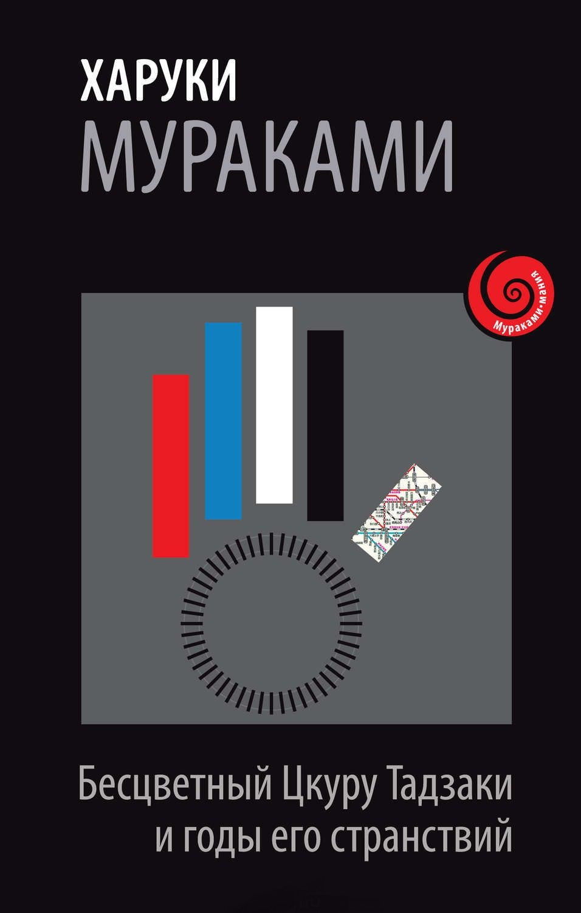
Автор: Харуки Мураками
Оценка: ⭐⭐⭐☆☆
Бесцветный Цкуру Тадзаки, действительно, похож на Норвежский лес, которые меня скорее всегда отталкивал. Но так как я со всей любовью отношусь к строкам Мураками, я решила погрузиться и в это произведение.
Начну с того, что это больше реализм. Все-таки если пробежаться по тому, что я особенно люблю у Мураками, то там всегда будет нечто сюреалистичное, что-то фэнтезийное. Здесь же, хоть и упоминаются загадочные обстоятельства - все они оказываются частью нашего мира.
Так же как и в Норвежском лесу, здесь герой проживает свое прошлое, возвращаясь к нему и перебирая все моменты заново. Здесь так же ощущается сильный акцент на физическом, что не редкость для Мураками, но именно в этих двух произведениях реализовано в максимальной форме - реально большой акцент на теле.
Изначально, сама идея с "цветными" персонажами увлекла меня. История отца Хайды показалась интригующей. Но после все это растворилось в обыденности и рефлексии одиночества. Это ни плохо, ни хорошо. Просто так вот есть.
Ощущения смешанные, советовать тем, кто мало знаком с творчеством автора, не стала бы.
Больше всего мне запомнилась сноска переводчика: "Повторная волна у землетрясения, если таковая случается, как правило, слабее главной (основной) волны и короче по продолжительности. Если же это не так, то повторная волна считается основной, а первая - предварительной". Не знаю, почему, но меня зацепила мысль, что события оцениваются только по масштабу влияния, а не по времени происшествия. Может мне понравилось, что статус одного события может измениться в зависимости от другого.
P.S. Великолепная обложка: цвета, станции и серое поле. Все по фактам
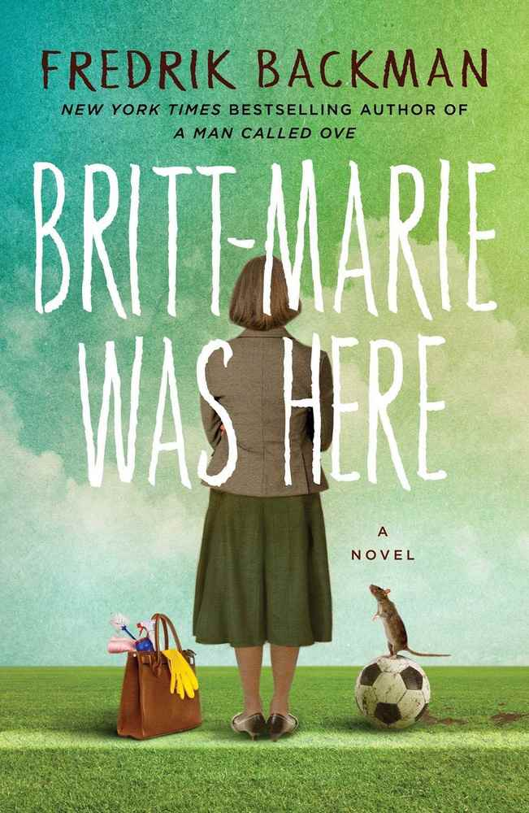
Автор: Фредрик Бакман
Оценка: ⭐⭐⭐⭐⭐
Я накинулась на эту книгу как с голодного мыса, настолько, видимо, соскучилась по слогу Бакмана.
Бритт-Мари просто хотела бы чтобы кто-то знал, где она. Книга о переменах в жизни, поиске себя и своего пути.
Бритт-Мари всю свою жизнь была для кого-то и никогда для себя. Сначала она жила ради своей старшей сестры, которая была лучше во всем. После ее смерти она жила ради своего мужа, который быстро понял, что ее не обязательно ценить.
"она мыла окна с "Факсином" каждый день всю свою жизнь и никогда не имела проблем с тем, чтобы видеть мир. Это мир ее не видел"
"Она подумала, не рассказать ли крысе о своем жизненном кризисе. Объяснить, как трудно, когда ты остался один, если всю жизнь существовал для кого-то другого. Но доставлять крысе дискомфорт не хотелось. Поэтому Бритт-Мари расправила складку на юбке и официальным тоном произнесла:
- У меня к вам предложение. Каждый вечер, в шесть часов вам здесь подадут ужин. - Бритт-Мари указала на батончик .- Предложение, если вы найдете его взаимовыгодным, будет означать, что я не позволю вам в
случае вашей смерти лежать в стене и пахнуть. А вы сделаете то же для меня. Пусть знают, что мы с вами - тут."
В конце я не могла понять, какой выбор сделает Бритт-Мари. Точнее, я ошиблась и очень этому рада. Я предположила, что героиня выберет себе сирот, ради которых будет жить теперь — ведь она обещала их погибшему брату, что позаботится о них. Но Бритт-Мари первый раз в жизни выбрала себя, оставив в поселке бывшего мужа, ухажера и детей, который сами принесли ей бензин, которого должно было хватить до Парижа. И вот она в первый раз учится ехать одна в темноте в свою мечту, к своим собственным выборам и впервые делая что-то для себя
"Дети стояли и махали, пока Бритт-Мари усаживалась за руль. Они махали словно всем телом - взрослые так не умеют. В Борг пришло утро, и солнце сдержанно и уважительно застыло на горизонте, словно давая Бритт-Мари время в последний раз сделать выбор и в первый раз выбрать то, что нужно ей самой. Когда дневной свет наконец разлился по крышам, белая машина с синей дверью тронулась с места. Может быть, Бритт-Мари остановится. Может быть, постучит еще в одну дверь. Может быть, просто поедет дальше.
Бог свидетель: бензина Бритт-Мари хватит."
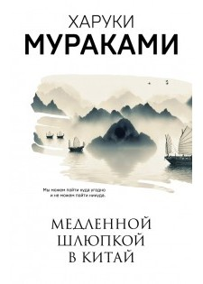
Автор: Харуки Мураками
Оценка: ⭐⭐⭐⭐⭐
Еще одно стилистическое ассорти от Миядзаки. Сборники короткой прозы ненадолго возвращают меня к тому, что я так люблю. В этот раз все трагично, хрупко, но как всегда сюрреалистично. Дом, милый дом.
"Открыв глаза, я понял, что лежу на скамье под какой-то полкой с виноградом, день клонится к закату; первое, что я почувствовал, - свежесть воды, окропившей сухое бейсбольное поле, и запах новой кожи от перчатки, подложенной мне под голову. И вялую боль в виске. Я что-то бормотал. Не помню. Потом приятели рассказали мне, пряча глаза, что именно. Вот что я говорил:
- Все в порядке - если стряхнуть пыль, есть еще можно."
"Пока мы искали слова, зависла долгая пауза. И сердца наши связывал лишь нежный звук вращения Земли"

Автор: Мария Корелли
Оценка: ⭐⭐⭐⭐☆
Ура, мы нашли, чем вдохновлялся Булгаков при написании МиМ.
Лючио Риманец это буквально Воланд, который чуть более трогательно и драматично несет свое проклятье. Хотя может я просто не помню, и Воланд тоже выражал всем своим существом тяжесть своего положения.
Так или иначе, но тут правда скорбь Сатаны, точнее, как поправляет сам герой, миллион миллионов скорбей. В остальном истории также похожи: у нас есть мастер-писатель, есть падшее общество и обворожительная девушка. Но вот в Скорби общество безнадежнее, и любовной линии с Сибиллой нет и быть не могло, поскольку любовь ей не свойствена.
Эта тоска и безнадега затрудняют чтение, потому что в какой-то момент их становится чересчур много, но зато как правдиво.
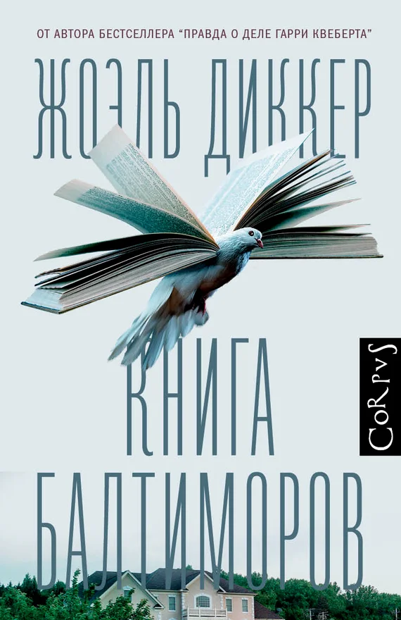
Автор: Жоэль Диккер
Оценка: ⭐⭐⭐☆☆
Чем дольше думаю о книге, тем хуже впечатления. На самом деле, по концепту семейных драм, немного напомнило Маленького друга Тартт. Но там как будто глубже по сюжету.
Скомканные чувства. Мне нравится, как шло повествование, нравится постепенность развития всех линий. Но как итог, я бы сказала, что я не верю. Не верю персонажам, их поступкам и мотивациям.
История интересная и мне понравилось вернуться к Маркусу Гольдману, но сам сюжет про Балтиморов оставляет странное послевкусие. Я думаю, что я продолжу и дальше свое знакомство с романами Жоэля, но не сразу.
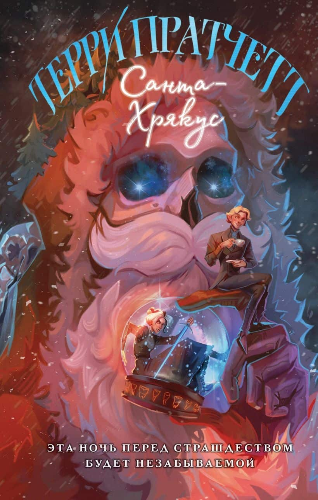
Автор: Терри Пратчетт
Оценка: ⭐⭐⭐⭐⭐
Эта книга больше года ждала своего часа, потому что я специально оставила ее под новый год. Я так люблю Терри Пратчетта и весь цикл о Смерти! Сьюзен, внучка Смерти, это еще одна сильная женщина в произведениях Пратчетта, она получает от меня отдельную похвалу. И Тчай-Тчай в роли антагониста был очень элегантен и остроумен, мне угодил.
Спасибо за смех и ощущение праздника Страшдества!
Кстати, оформление Полины Граф это отдельные аплодисменты, оно задает тон!
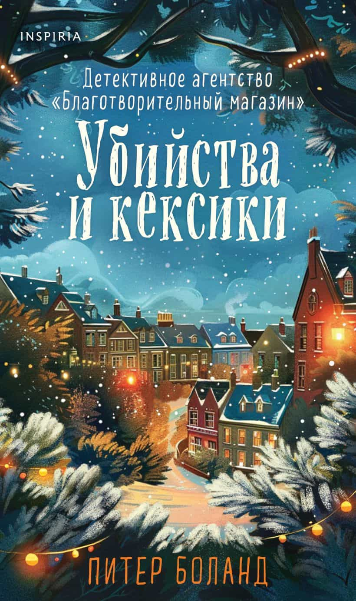
Автор: Питер Боланд
Оценка: ⭐⭐⭐☆☆
Дейстительно похоже на Клуб убийств по четвергам. Но не мой жанр, я просто не могу ассоциировать себя с пенсионерами, из-за этого не воспринимаю всерьез происходящие детективные повороты. Но отдельная любовь к этому новогоднему оформлению издания, оно задало весь вайб!
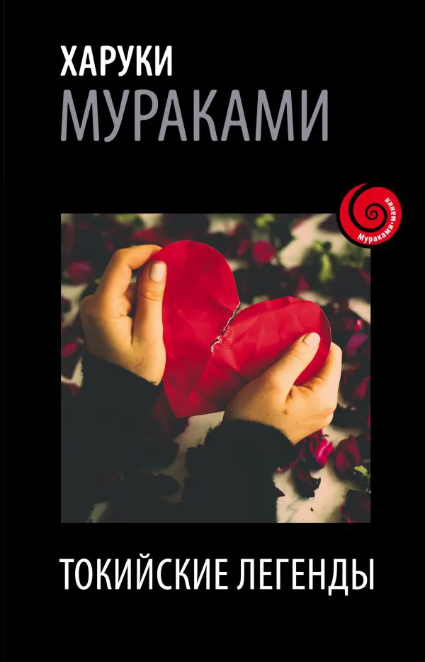
Автор: Харуки Мураками
Оценка: ⭐⭐⭐⭐⭐
Это просто книга-пробник. Я только втянулась, только поздоровалась с Мураками-саном, а она уже закончилась.
В любом случае было приятно снова оказаться с этим автором. Всегда хорошо получается. Писать короткие рассказы, кажется, даже сложнее, чем полноценные романы.
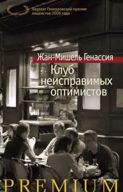
Автор: Жан-Мишель Генассия
Оценка: ⭐⭐⭐⭐⭐
Впечатляюще! Честно говоря, слов маловато, чтобы описать этот Роман. А это именно Роман с большой буквы.
Я не торопилась и провела с ним достаточно много времени — у меня накопилось большое количество фотографий отрывков, которые хотелось выписать и перечитать еще раз.
Я даже не знаю, как можно сформулировать, о чем именно эта книга. Обо всем. Тут каждый точно найдет что-то для себя и про себя. Я постоянно ловила себя на мысли, что вот этот эпизод будет полезно прочитать моему другу, а другой — подруге. Я бы посоветовала ее всем.
Вначале меня отпугнули количество сносок и необычность эпохи — 1959-1964. Но каждому роману нужно время, здесь я ни капли не пожалела, что посвятила ему эти часы.
Я прожила это время во французском бистро вместе с героями. Попалась на все эмоциональные качели и прочувствовала каждый сюжетный поворот!
Последние сто страниц свели меня с ума, я была под впечатлением — все персонажи такие глубокие, интересные, объёмные.
"Я считаю каждый день подарком судьбы. Много лет я работал как каторжный, не считаясь со временем и собственными желаниями, фактически бесплатно, не знал ни сна ни отдыха. То время я считаю потраченным впустую. Сегодня я читаю, сплю, слушаю музыку по радио, гуляю по Парижу, беседую с людьми, хожу в кино, отдыхаю, кормлю кошек, а когда карманы пустеют, отправляюсь в «Фотораму», чтобы обеспечить себе прожиточный минимум. Я счастлив, как никогда. Беда не в эксплуатации, а в нашей глупости. Мы принуждаем себя, надрываемся, чтобы иметь лишнее и ненужное. Хуже всех глупцы, вкалывающие ради денег. Проблема не в боссах, рабами нас делают деньги. В день Великого Выбора прав оказался не придурок, слезший с дерева, чтобы превратиться в человека разумного, а обезьяна, оставшаяся висеть на ветке, поедать фрукты и почесывать живот. Люди ничего не поняли в эволюции. Человек работающий — король придурков"
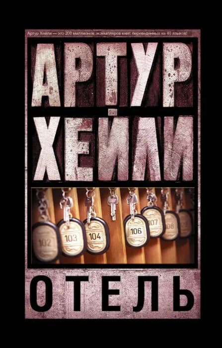
Автор: Артур Хейли
Оценка: ⭐⭐⭐⭐⭐
Хорошо, теперь я поняла, что это за пятна крови на обложке. Все понятно.
Очень неожиданный финал, конечно, пару раз я очень удивленная, признаю. Очень приятно было прочитать, когда-нибудь я и аэропорт осилю, честно. Как бы я расстроилась, если бы Питер не одумался и выбрал бы Маршу... Как много может сойти с рук и как многое может вернуться к тебе обратно. Жуть как интересно!
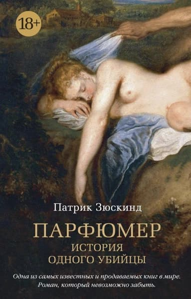
Автор: Патрик Зюскинд
Оценка: ⭐⭐⭐⭐⭐
Продолжаю осеннее настроение. Вдохновлено короткой программой Пети Гуменника. На самом деле история мрачная, но эта мрачность не ощущается сразу. Ты не сразу пропитываешься жутью главного героя, а постепенно вместе с ним проходишь эти грани безумия. История цельная и читается быстро и легко, но финальная часть все равно кажется резкой по завершению Как будто автору хотелось быстрее закончить эту историю. Поэтому именно концовка оставляет неоднозначное впечатление
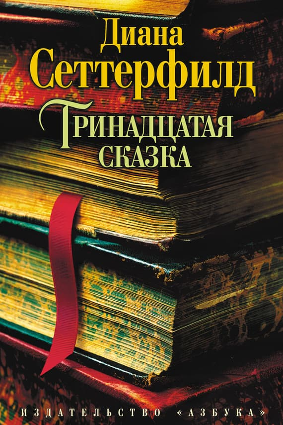
Автор: Диана Сеттерфилд
Оценка: ⭐⭐⭐⭐☆
Очень подходит под осеннее настроение. Я ожидала более жуткой атмосферы, но сама история интересная и затягивающая. Прочиталась быстро и легко.
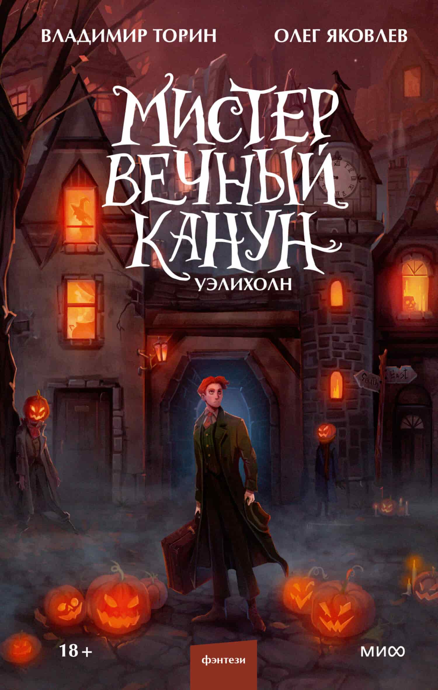
Автор: Владимир Торин & Олег Яковлев
Оценка: ⭐☆☆☆☆
Overrated как по мне. Очень много шума вокруг этой книги, но я не смогла прочитать и половины. Мне не понравились ни стиль повествования, ни история, ни персонажи. Ничего меня не зацепило, а что-то даже оттолкнуло. Бывает такое, что книга написана/переведена так, что ты просто не можешь читать ее не морщась, вот тут как раз этот самый случай. А может я просто слишком придирчева, как вариант
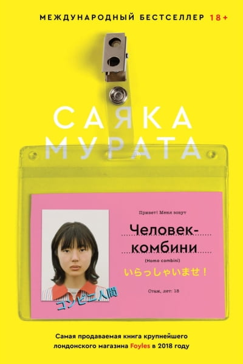
Автор: Саяка Мурата
Оценка: ⭐⭐☆☆☆
Книга на пару часов. Опять же, не отрицаю, что стиль слога обусловлен переводом.
Мысль правильная, посыл хороший, просто мне форма не откликается. А так ознакомиться интересно, я от этой авторки когда-то давно сохраняла в подборку "земляноиды", но так и не ознакомилась. Не скажу, что "человек-комбини" подтолкнул меня к другим произведениям авторки, но познакомиться хотелось.
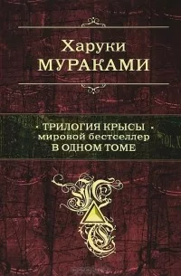
Автор: Харуки Мураками
Оценка: ⭐⭐⭐⭐⭐
О трилогии Крысы:
Масштабная, длинная и запутанная история. Переплетаются миры, реальности, персонажи, что-то из этого связано, а иное и не подключено друг к другу.
1. Слушай песню ветра
2. Пинбол-1973
3. Охота на овец
4. Дэнс, дэнс, дэнс
Да, в трилогии четыре произведения, все верно.
Слушай песню ветра и Пинбол мне понравились и запомнились. Это первое знакомство с "я" и Крысой, начало их истории. Может поэтому мне откликнулись "молодые" их версии — этот период жизни мне просто более знаком и понятен. Но при этом эти истории ощущаются именно как экспозиция для двух последующих произведений.
Охота на овец меня поразила своей мистикой, загадками и путем героев. Это произведение мне показалось достаточно динамичным для Мураками. А может, мне просто так запомнилось. Может сам образ овцы со звездой на боку оказался настолько ярким, что опечатался мне в память. В любом случае, эта часть самая запоминающаяся и конкретная что-ли. Тут и ушастая девушка, и Селедка, и отель Дельфин, и Человек Овца. Все яркие образы, которые после встретятся в Дэнс, потому что главный герой заберет их с собой. В Охоте на овец как будто концентрация деталей выше. Как будто в Денс все образы более серые, глубокие, с кучей оттенков, а в Охоте их много ярких, и они все интересные по-своему. Мне очень запомнилась линия с именами, точнее с их отсутствием, это в целом почерк Мураками, но тут тема развита.
Данс, дэнс, дэнс меня укачал своим, видимо, активным танцем. На самом деле, мне кажется, что ее не стоило читать сразу после Охоты на овец. Как будто между этими произведениями у читателя также должен быть "воздух" и время на подышать. Потому что настроения разительно отличаются, действие происходит спустя 4 года после Овец.
Последняя часть в целом получилась тянущей, меланхоличной, запутанной. Особенно сложные образы и еще более глубокое копание в связях между миром и человеком. Отель Дельфин превратился в длинный темный коридор, Селедка умерла (проще назвать кто не умер), Человек-Овца исчез, а главный герой прошел сквозь стену, потерявшись насовсем. Книга обо всем, но в первую очередь об одиночестве и напоминание танцевать все равно. А что еще делать? Остается только танцевать, да не абы как, а на высшем уровне.
Местами я совсем терялась в своих ощущениях от этой истории. Также как и главный герой терялся в происходящем и в своих ощущениях.
"Когда запутаешься, как рыба в сетях, главное — не делать резких движений. Замри на какое-то время — и что-нибудь произойдет. Обязательно начнет происходить. Вглядись в мутный полумрак пристальней — и жди, пока там что-нибудь не зашевелится. Знаю по собственному опыту. Что-нибудь обязательно начнет шевелиться. Если тебе это нужно — оно обязательно зашевелится"
"— Танцуй, — сказал Человек-Овца. — Пока звучит музыка — продолжай танцевать. Понимаешь, нет? Танцуй и не останавливайся. Зачем танцуешь — не рассуждай. Какой в этом смысл — не задумывайся. Смысла все равно нет и не было никогда. Задумаешься — остановятся ноги. А если хоть раз остановятся ноги — мы уже ничем не сможем тебе помочь. Все твои контакты с миром вокруг оборвутся. Навсегда оборвутся"
Автор: Маркус Зусак
Оценка: ☆☆☆☆☆
Я не отрицаю, что возможно проблема с переводом. Но я считаю, что не всех получается достойно писать от первого лица. Тут получилось не очень. Не смогла дочитать из-за манеры повествования
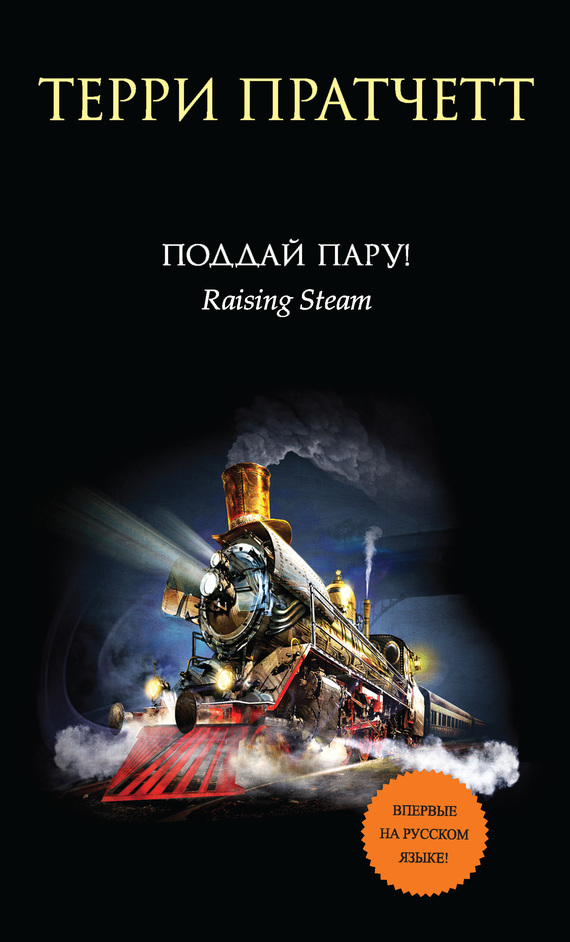
Автор: Терри Пратчетт
Оценка: ⭐⭐☆☆☆
Это первая книга Пратчетта, которую я не дочитала. Может проблема в переводе: Мокриц вместо Мойста ударил в глаза моментально. Может дело именно в сюжете, но ничего меня не цепляло, искры не было :(
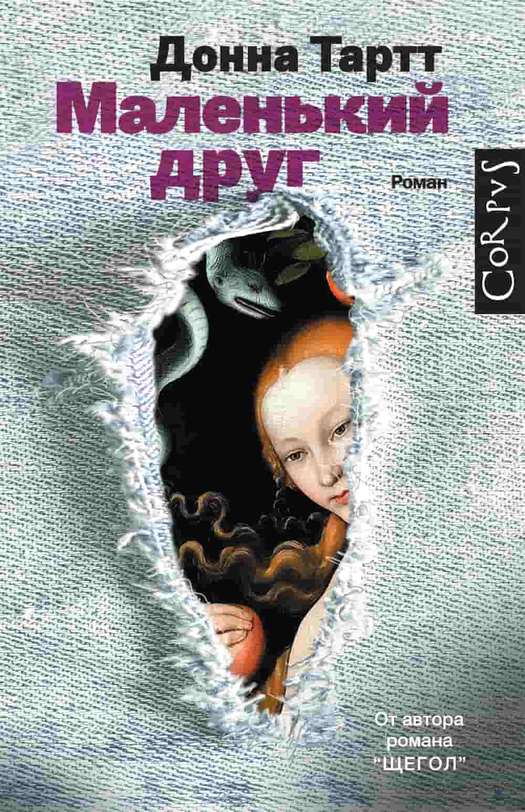
Автор: Донна Тартт
Оценка: ⭐⭐⭐⭐⭐
Роман обо всем и ни о чем одновременно. Это не детектив, он только прикрывается убийством с первых страниц. Это в первую очередь роман о взрослении и жизни. Очень много разных историй рассказано в этом объёмном произведении, но в конце они все рассыпаются, так и не успев сложиться в одну картину.
В центре не убийство Робина и его расследование, а жизнь маленького городка на юге США в 70-ых. Эта жизнь отражается в Гарриет и Дэнни — представителях абсолютно разных семейств.
Если кратко, то в этом романе: змеи, проблемы чернокожих, лето, переходный возраст, баптисты, еще змеи, много теток, вороны, пистолеты, наркотики и еще больше змей!
И это не у меня описание сумбурное, сам роман такой! И поверьте, ответов больше не становится, но в напряжении ты до конца
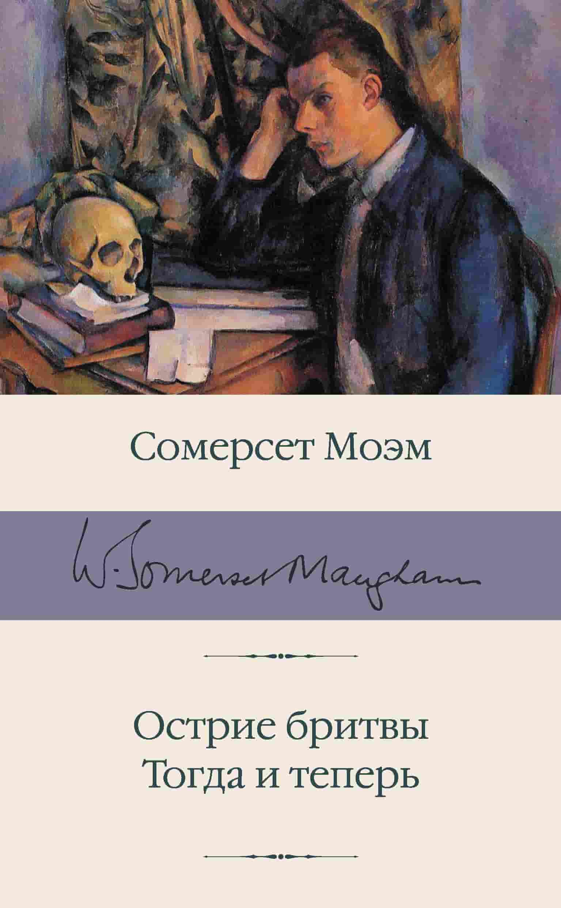
Автор: Сомерсет Моэм
Оценка: ⭐⭐⭐⭐⭐
Настоящий роман, который отозвался во мне намного сильнее из-за подходящего контекста. Мне было очень интересно следить за судьбами всем героев, но особенно меня интересовал Ларри, поскольку он также был в поиске себя и ответов. Я, конечно, вряд ли поеду в Индию к святым, но подход меня заинтересовал 👀
На удивление было несложно читать, несмотря на большой объем и огромное количество пространственных размышлений. Понравилось все: и декорации, и персонажи, и язык автора, и стиль повествования.
Концовка тут такая, что ты до последнего не ожидаешь, что роман кончится вот сейчас, тебе хочется больше ответов про судьбы героев, но оказывается, что сказано и так достаточно
Всем рекомендую!!
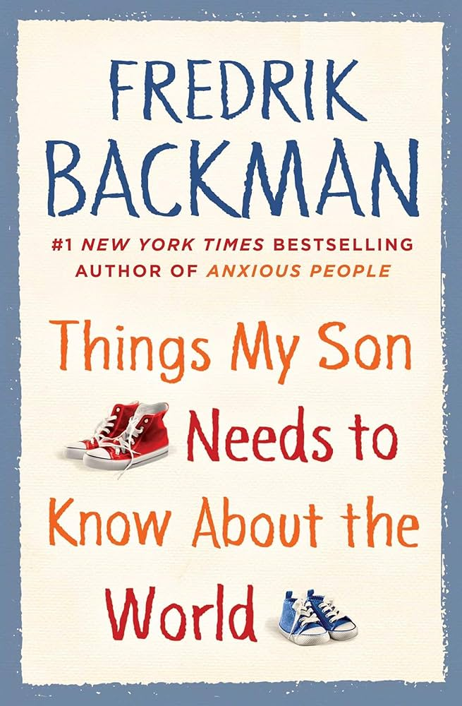
Автор: Фредрик Бакман
Оценка: ⭐⭐⭐⭐⭐
Самое лучшее в этой книге это слова Бакмана про жену.
Небольшая книга с любимым слогом Бакмана, состоящая из коротких историй/советов/лайфхаков. По-простому, с юмором, обо всем.
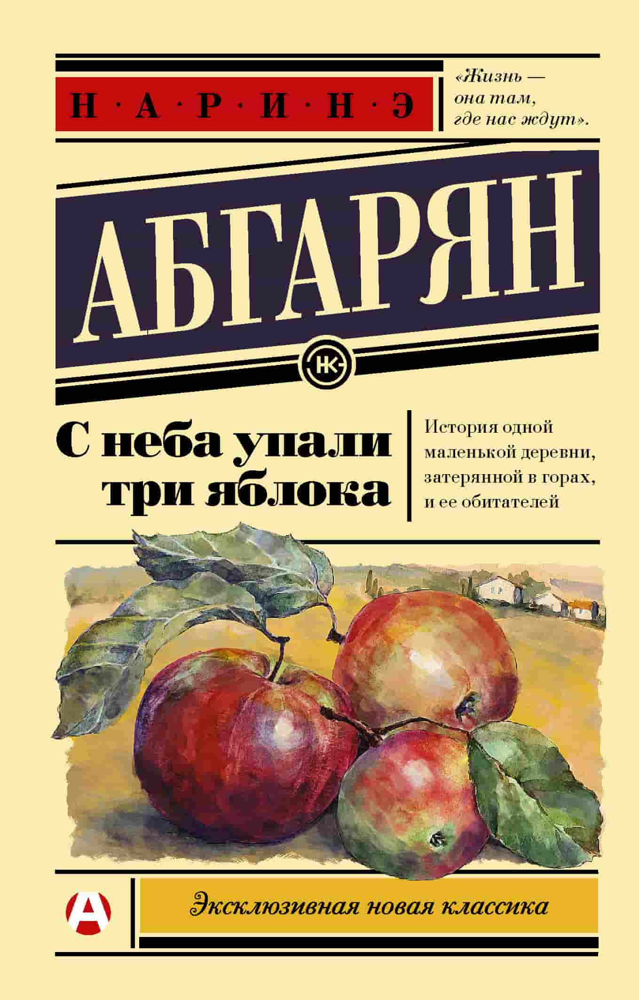
Автор: Наринэ Абгарян
Оценка: ⭐⭐⭐⭐⭐
Атмосферно, уютно, по-домашнему и с налетом грусти. Спасибо Насте за рекомендацию!
Деревня, старики, ветхие истории и бесконечная вера в добро. Толкование снов, традиции и знаки судьбы.
"Мир маленький, а мы большие, хотя по наивности и глупости всю жизнь считаем наоборот"
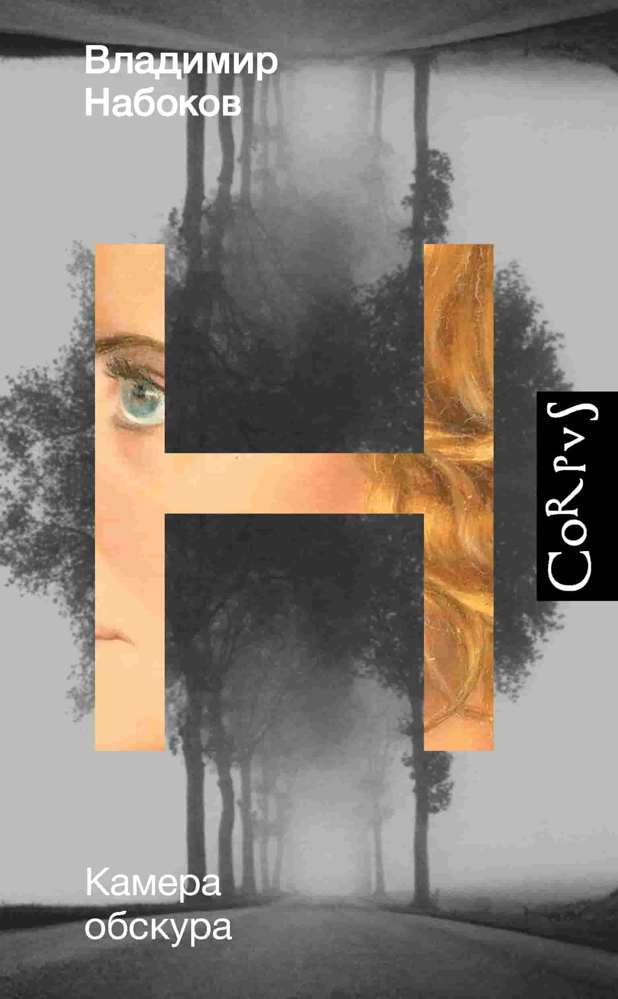
Автор: Владимир Набоков
Оценка: ⭐⭐⭐☆☆
Какая тягостная и омерзительная история. Понимаю, что сюжет имеет место быть, но впечатление после него настолько оттесняет все остальное, что я не могу трезво оценивать эту книгу. Никакого "вау" эффекта я тут не увидела (не знаю почему, но от Набокова ожидания всегда завышенные), только разочарование и мерзавцы
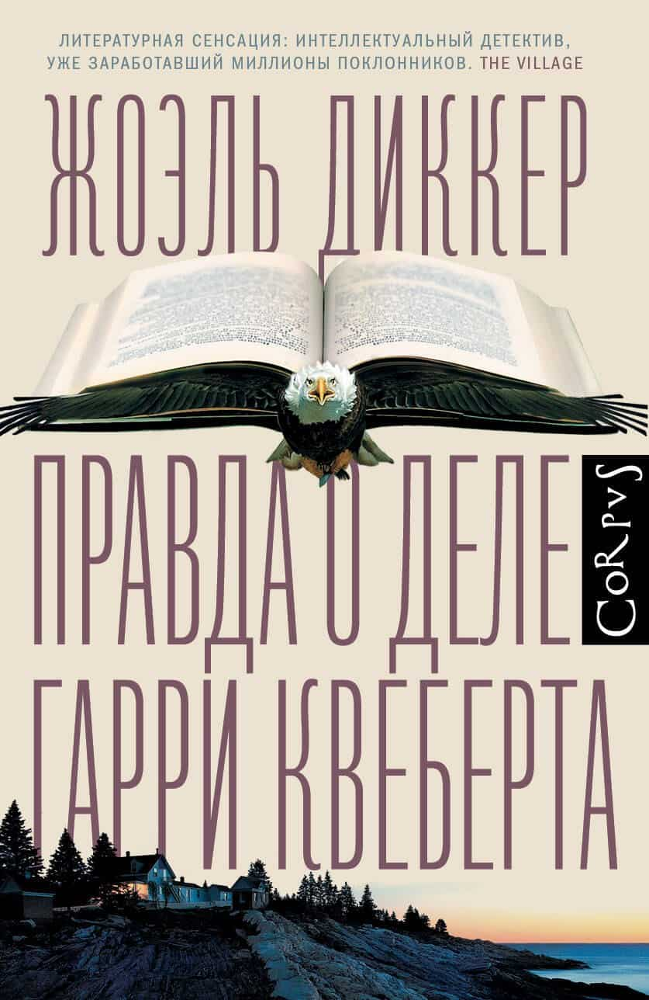
Автор: Жоэль Диккер
Оценка: ⭐⭐⭐⭐⭐
Наткнулась случайно на рекомендацию этой книги и буквально проглотила ее. Отличный детектив с интересной структурой. Все герои сложные, повороты неожиданные, до последнего не понятно, что происходит, но при этом жутко интересно и хочется разобраться. Видимо, теперь придется знакомиться и с другими книгами автора
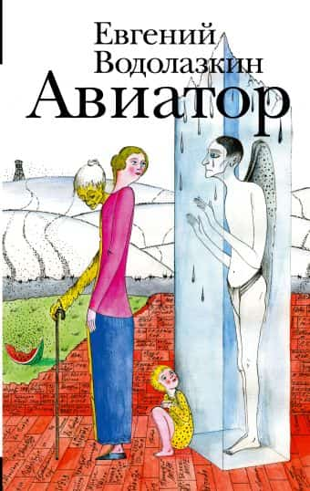
Автор: Евгений Водолазкин
Оценка: ⭐⭐☆☆☆
Мне очень рекомендовали Водолазкина, но я не смогла дочитать. Показалось затянуто, странно и с налетом пыли (может она от главного героя, кто знает)
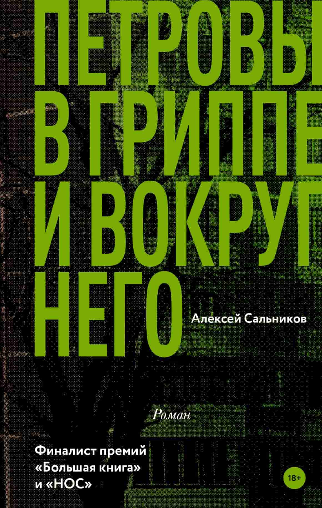
Автор: Алексей Сальников
Оценка: ⭐⭐⭐⭐⭐
Впервые увидела книгу у Насти в вишлисте, а так как ее вкусу в литературе я доверяю, решила читать. Говорю же, марафон у меня) Красивая манера повестования, которая переплетается и естественно и органично замыкает себя. Несколько реальностей размываются, заставляя гадать, что является плодом лихорадки, а что правдой
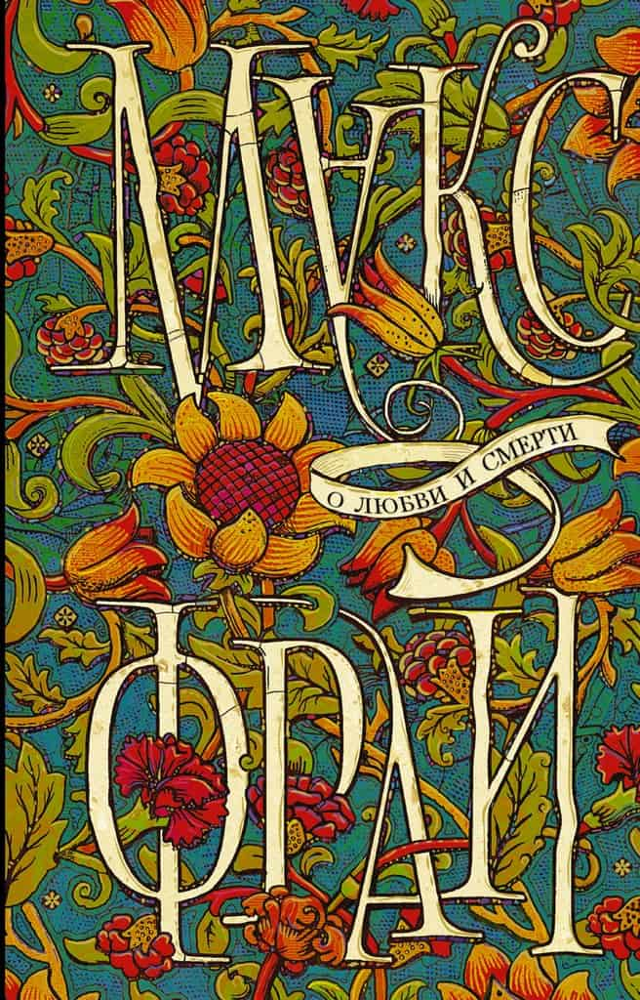
Автор: Макс Фрай
Оценка: ⭐⭐⭐⭐⭐
Как же я хотела прочитать эту книгу именно в данном издании! Случайно наткнулась в библиотеке и так обрадовалась! Это книга-перевертыш, два оформления с разных сторон. Две части сборника встречаются примерно на половине книги, отражая друг друга зеркально. Красиво. Истории разные - грустные, веселые, трагичные, но все они, действительно, о любви и смерти)
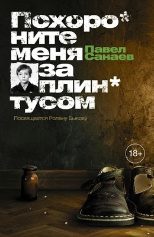
Автор: Павел Санаев
Оценка: ⭐⭐⭐⭐⭐
Долго не могла вспомнить, читала я ее ранее или нет. Жутко, давяще и трогающе за душу. Объявляю марафон современной отечественной прозы
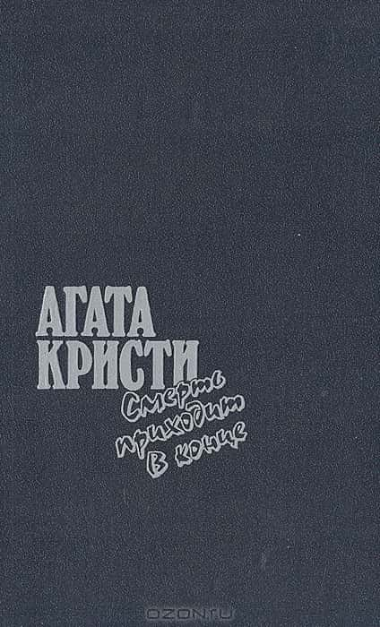
Автор: Агата Кристи
Оценка: ⭐⭐⭐⭐☆
Понравилось больше, чем приключения мисс Марпл.
Атмосфера деревни, луж, неудобной кровати и вечного шума. Читается легко, конец интересный, заставил посидеть над книгой ночью
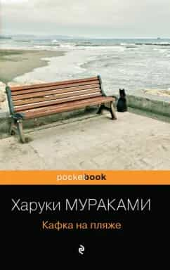
Автор: Харуки Мураками
Оценка: ⭐⭐⭐⭐☆
Типичный Мураками и его обычный вайб потерянности и замыленности. Герои борятся с судьбой и долго бьются головой, только чтобы доказать, что все предрешено. Пересказ Эдипова комплекса
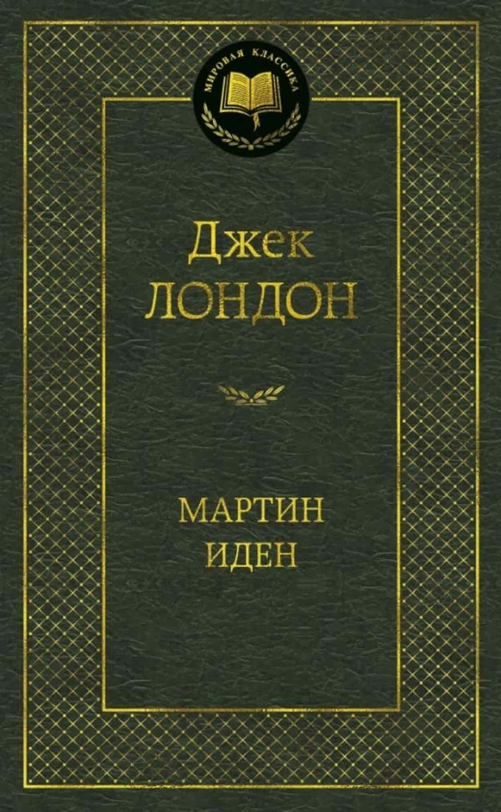
Автор: Джек Лондон
Оценка: ⭐⭐⭐⭐⭐
История о неутомимом стремлении к мечте и цене, которую приходится за неё платить. Зная Джека Лондона было ясно, что путь Мартина не приведёт к тихому счастью. Его живая, беспокойная мысль, жажда большего и острое чувство своей непохожести на окружающих не оставляли места покою.
Вершина, к которой мы идём, порой оказывается пустой и холодной
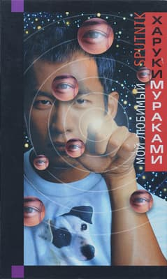
Автор: Харуки Мураками
Оценка: ⭐⭐⭐⭐⭐
Я увидела это издание на авито и не смогла пройти мимо. Теперь для меня эта книга ассоциируется с поездкой в Карелию, именно там я ее проглотила. Это пока что лучшее, что я читала у Мураками.
"...Одинокие металлические души, они свободно рассекают мрак космоса, случайно встречаются друг с другом, проплывают мимо и расстаются навеки. Никаких приветствий, никаких обещаний на будущее"
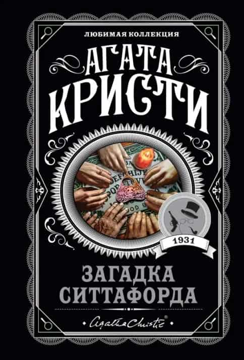
Автор: Агата Кристи
Оценка: ⭐⭐⭐⭐☆
Больше всего в этой книге мне нравится то, что она мне досталась от Насти после того, как я отдала ей свою книгу Кристи в таком же издании.
Этот детектив читался довольно бодро и оказался интереснее обычных похождений Мисс Марпл и Эркюля Пуаро, но я все равно не в восторге, что догадаться о том, кто убийца невозможно. Читателям явно недоговаривают множество деталей, которые просто так недодумать
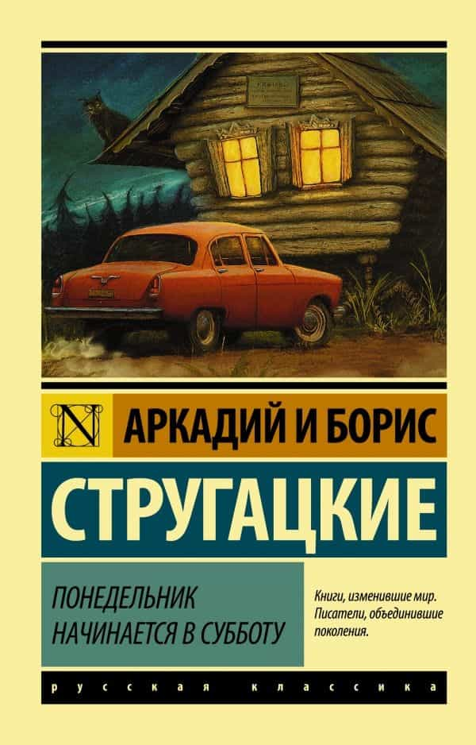
Авторы: Аркадий и Борис Стругацкие
Оценка: ⭐⭐⭐⭐⭐
Легкая приятная сказочная книга, которая читается с ощущением улыбки на губах. Мне бы хотелось продолжения, слишком уж это похоже на то, что мне нравится
"Счастье есть отсутствие несчастья"
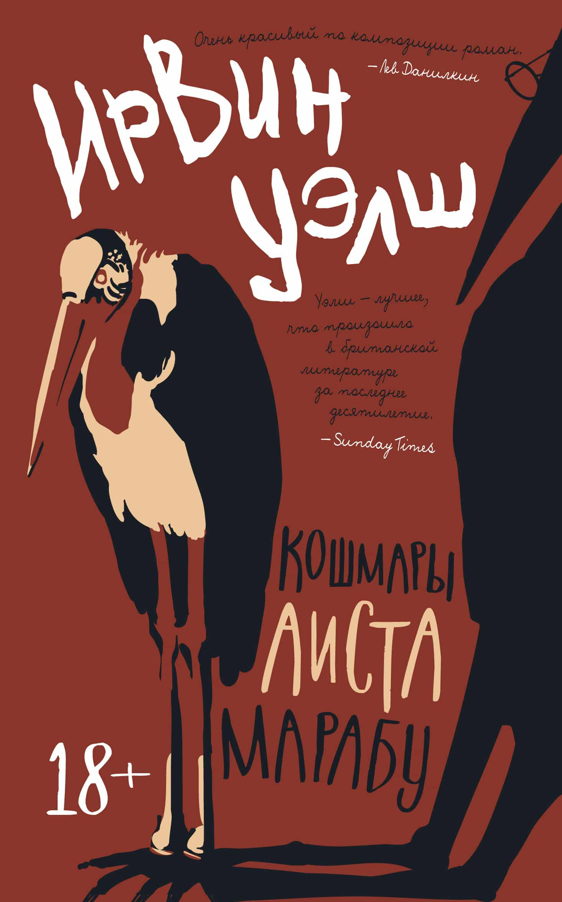
Автор: Ирвин Уэлш
Оценка: ⭐⭐⭐⭐⭐
Смола, горечь, грязь, злоба, безнадега, безысходность, тоска
В книге идут два параллельных повествования:
1. Фантазийно-приключенческая линия: Рой «охотится» в воображаемой Африке на аиста марабу вместе с напарником
2. Автобиографическая/реалистичная линия: воспоминания о его детстве в Шотландии, эмиграции в Южную Африку, возвращении, взрослении, насилии, футбольных фанатах, преступлениях
В «Кошмарах аиста марабу» Уэлш не только сюжетно сталкивает эти два слоя, но и редакционно-типографски делает так, что эти миры буквально врезаются друг в друга на странице.
Например, изломанный набор: текст может идти «лесенкой», с неровными краями или странными переносами, показывая, что сознание героя сбоит
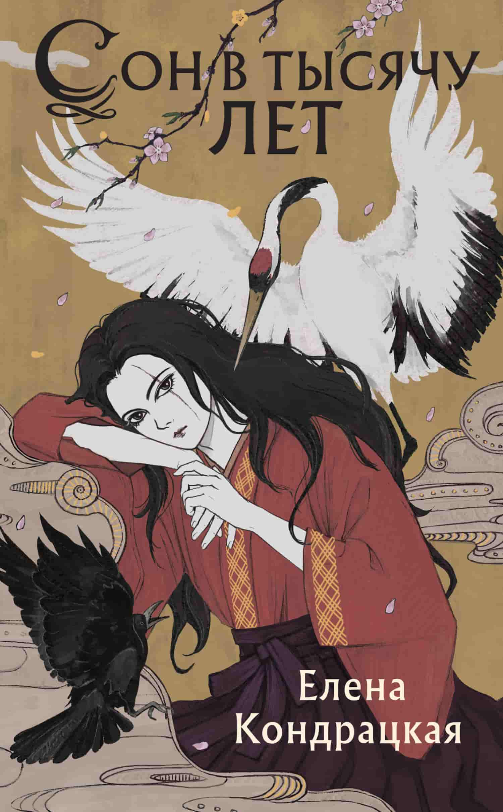
Автор: Елена Кондрацкая
Оценка: ⭐⭐⭐⭐☆
Как мало было ожиданий, а в итоге совсем неплохо! Прочитала все три тома достаточно быстро, хотя перечитывать, наверное, не стала бы 🤔
Это та самая история, где не понятно, почему ты продолжаешь ее читать, но и бросить не можешь
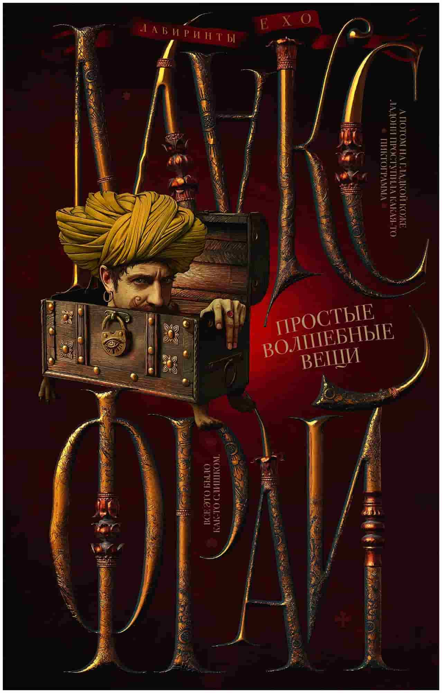
Автор: Макс Фрай
Оценка: ⭐⭐⭐⭐⭐
Я правда люблю мир Эхо
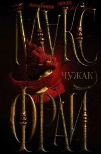
Автор: Макс Фрай
Оценка: ⭐⭐⭐⭐⭐
Я даже никак комментировать не буду, это мое первое знакомство с миром ЕХО и Максом Фраем. Учитывая, что я после прочитала еще много книг, знакомство удачное ʕ ᵔᴥᵔ ʔ